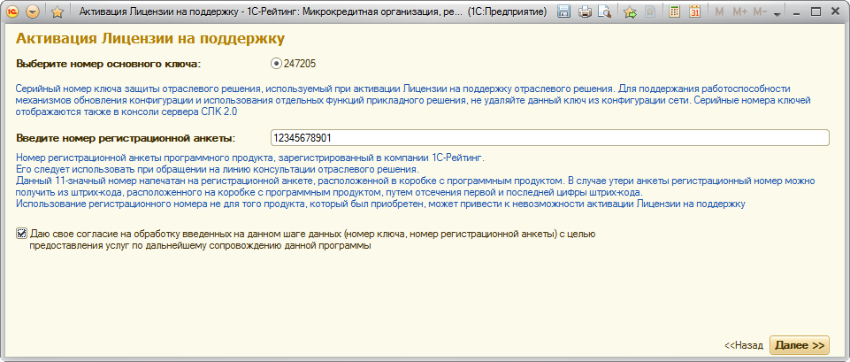
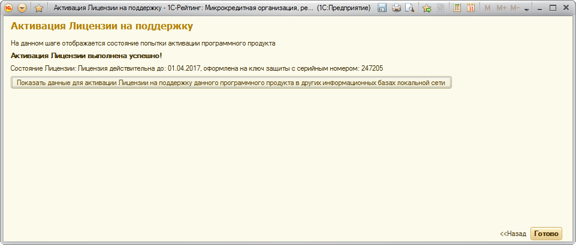
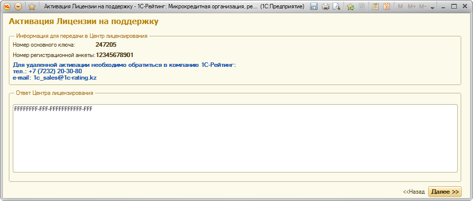

На втором шаге мастера производится выбор способа активации.
Для активации Лицензии на поддержку следует использовать способ «Автоматически», либо «Вручную». Способ «Ответом из Центра лицензирования в пределах локальной сети» используется в случае, если активация на одной из информационных баз данного программного продукта уже выполнена, и ее нужно только повторить в других информационных базах (порядок действий описан в «Инструкции по активации Лицензии в других информационных базах этого же программного продукта в пределах локальной сети»).
На третьем шаге, в случае активации в автоматическом или ручном режиме, осуществляется ввод основных сведений, требуемых для выполнения активации.

В поле «Номер основного ключа» выбирается тот основной ключ, к которому будет привязана активация Лицензии на поддержку. Список ключей формируется из доступных на момент активации основных ключей программного продукта, расположенных на сервере СЛК, к которому выполнено подключение.
В поле «Номер регистрационной анкеты» вводится зарегистрированный в компании 1С-Рейтинг номер программного продукта.
Если данные уже вводились ранее (если проводится продление), их можно оставить без изменений. Указанные поля являются обязательными для заполнения.
В случае наличия нескольких баз в локальной сети, для первой из них производится активации автоматически или вручную (по телефону и т.д.), согласно описанным далее действиям. Для последующих баз порядок действий описан в «Инструкции по активации Лицензии в других информационных базах этого же программного продукта в пределах локальной сети».
Номер основного ключа и номер регистрационной анкеты передаются в Центр лицензирования для выполнения активации.
В случае выбора способа активации «Автоматически», при переходе на следующий шаг производится связь с Центром лицензирования посредством сети Интернет. В результате пользователь видит информацию об активированном сроке Лицензии на поддержку, если активация прошла успешно. В случае возникновения ошибок выдается информация о том, что активация не выполнена, с указанием причин.

Если активация не выполнена, можно вернуться на предыдущий шаг, откорректировать при необходимости сведения и повторить операцию активации, либо вернуться к повторной активации позднее.
В случае выбора способа активации «Вручную», на следующем шаге пользователь связывается с менеджером компании 1С-Рейтинг по телефону или другим средствам связи и выполняет активацию под руководством менеджера.
Для этого на следующем шаге пользователю отображается информация, которую пользователь должен сообщить менеджеру по телефону или другим способом.

К ней относятся регистрационный номер продукта и номер основного ключа (информация, введенная на предыдущем шаге).
В случае корректности сообщаемой информации менеджер сообщит пользователю строку, которую необходимо внести в поле «Ответ от Центра лицензирования», после чего нажать кнопку «Далее». После этого пользователь будет перенаправлен на страницу результатов активации, где сможет увидеть срок действия активированной Лицензии на поддержку.
Если требуется активация в других информационных базах этого же программного продукта в пределах одной локальной сети, на странице результатов активации необходимо нажать кнопку «Показать данные для активации Лицензии на поддержку данного программного продукта в других информационных базах локальной сети» и скопировать выведенный в окне текст для вставки в другие информационные базы этого продукта в локальной сети.